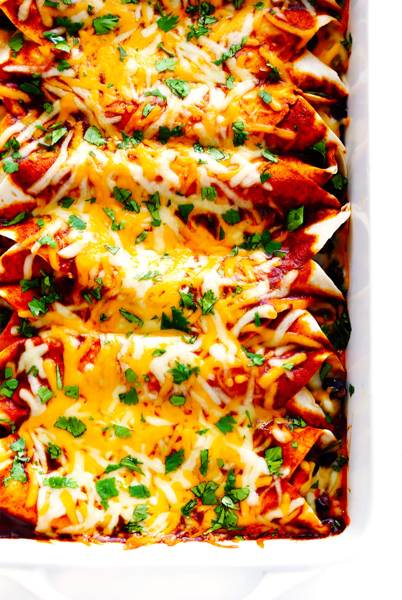

Enchiladas

Description:
This enchilada recipe is our favorite recipe. Becca and I have
decided to make it our tradition to make this every Christmas.
The only thing we recommend changing about this recipe is to
double the amount of sauce. Doubling the sauce allows for a
healthy amount to be poured on the top when baking it.
Ingredients:
- 2 tablespoons avocado oil
- 1 small white onion, peeled and diced
- 1 1/2 pounds boneless skinless chicken breast
- 1 can black beans
- 8 large flour tortillas
- 3 cups cheese
- 1 batch of enchilada sauce (remember to double it)
- optional toppings: cilantro, sour cream, lettuce, hot sauce
Steps:
- Prep oven and enchilada sauce
- Saute the filling mixture
- Assemble the enchiladas.
- Bake
- Serve